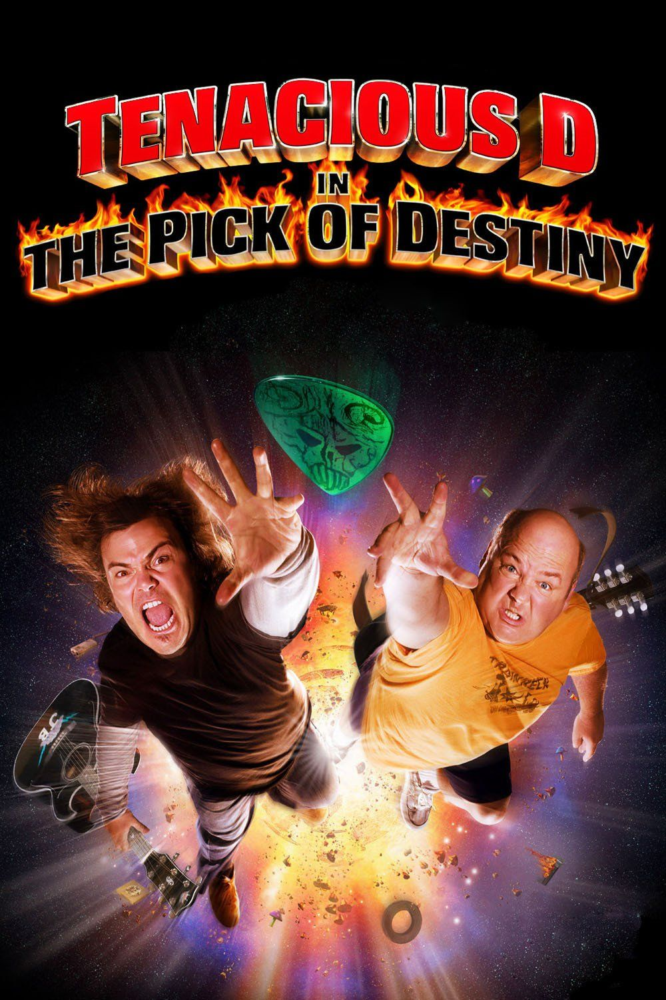

About
After spending 5 years in different Liberal Arts courses I decided to become a Web Developer.
Favorite Movies

Tenacious D The Pick of Destiny
Tenacious D in The Pick of Destiny is a 2006 American musical fantasy comedy film about comedy rock duo Tenacious D. Written, produced by and starring Tenacious D members Jack Black and Kyle Gass, it is directed and co-written by musician and puppeteer Liam Lynch. Despite being about an actual band, the film is a fictitious story set in the 1990s about the band's origins, and their journey... (More on Wikipedia)
The Blues Brothers
The Blues Brothers is a 1980 American musical comedy film directed by John Landis. It stars John Belushi and Dan Aykroyd as "Joliet" Jake and Elwood Blues, characters developed from "The Blues Brothers" musical sketch on the NBC variety series Saturday Night Live. The film's screenplay was written by Aykroyd and Landis. It features musical numbers by rhythm and blues (R&B), soul... (More on Wikipedia)
Mr Bean Movie
Bean (also known as Bean: The Ultimate Disaster Movie or Bean: The Movie) is a 1997 comedy film based on the television series Mr. Bean. It stars Rowan Atkinson in the title role and Peter MacNicol. It was directed by Mel Smith. The film used many of the ideas and skits from the original television series. In 2007, it was followed by a sequel, called Mr. Bean's Holiday. (More on Wikipedia)
About this page
This page has been coded during the FullStack program @LeWagon. That was probably the best experience of my entire life.